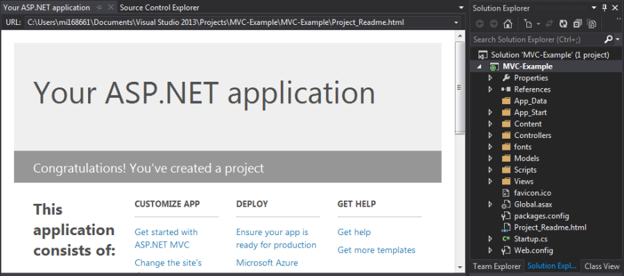

From what I understand of the literature around MVC, which is tricky to digest, the application server handles the requests and parameters, executes whatever was coded in C#, then renders the site content just as a conventional Web server would. We therefore find two categories of code in an MVC project: a variant of HTML, and C#. The C# handlers are stored under ‘Controllers’, and the HTML markup under ‘Views’. There is also a ‘Models’ folder, but it’s not used in the following project.
Opening an MVC Template
When creating a new ASP.NET Web Application project in Visual Studio, we get the option to create it from an MVC template. When all the prerequisites are loaded, a basic application should be displayed.
The template Web application has three default pages, a navigation menu and a layout. It can be launched by pressing the F5 key.

Appearance
One of the first things I wanted to do was change the appearance and colours of the site. The CSS file for an MVC 5 Web application is bootstrap.css, in the Content directory. Normally editing CSS is a matter of changing a few items in a short file, but unfortunately the template file has almost 7,000 lines.
What I did was launch the developer feature in Firefox (with the F12 key), and hovered the mouse cursor over each line in the source until I found the element I wanted to change. I then searched for the relevant item in bootstrap.css with Ctrl+F. Firefox’s developer feature can also give us the line numbers of interest in the CSS file.
As an example, the navigation bar’s background in the template is ‘navbar-inverse‘. In Visual Studio, I used Ctrl+F to search through the relevant lines in bootstrap.css until I found the entry that determined the background colour. I also did the same for the elements I wanted to change, and eventually ended up with something like this:
Site Content
Adding and modifying the static content is straightforward, as this is done with standaard markup in the CSHTML files. Viewing the files, you’ll notice they contain only the text and associated tags, and not the full HTML source. This is because ASP.NET handles the presentation for us, and much of it only needs to be created once in _Layout.cshtml file.
Adding a Page
A new page in this application would need two things: a ‘View’, and a ‘Controller’ in the HomeControllers.cs file. Here I’ll add a ‘Links’ page to the Web application, firstly by creating a handler method for the page within HomeControllers.cs:
public ActionResult Links()
{
ViewBag.Message = "Links and resources go here.";
return View();
}
With the controller in place, it is time to add the new page. In the /Views/Home directory there are .cshtml files for the three existing template pages. Right-click on the Views directory, then ‘Add… ‘View…‘.
After changing the name to ‘Links’ and proceeding with the default options, Visual Studio generated a Links.cshtml file that references the recently added controller. Now any browser pointing to the site will send a request to the server for the URL. The server, or ASP.NET framework, will then execute the handler for Links.
The final step to adding this page is to include it as an option in the site’s navigation menu, which is determined in the _Layout.cshtml file.
Adding C# Code
Throughout the source files there are embedded references to something outside the HTML markup, for example, ‘@DateTime.Now.Year‘, ‘@RenderBody()’ and ‘@Html.ActionLink’. These are known as ‘Razor helpers’, Razor being Microsoft’s method of embedding calls to C# functions within HTML source.
Again, these functions are called, compiled and executed before the rendered HTML is returned by the server. My first example calls DateTime to display a clock on the Contact.cshtml page:
@DateTime.Now
I decided to add custom tags around it to change the format of the output in bootstrap.css. As expected, the date and time is displayed in the Contacts page.
Small sections of C# code can also be placed directly within the HTML source, by adding it within the ‘@{ ... }‘ container. The following is an example of using Razor markup to declare a string as a variable and to display it on the Web page:
@{ var message = “This is a message”; }
@message
If it’s possible to declare variables and print them to a page, there should also be a way of reading variables from another source. Here I have added a text file to the App_Data directory with some data, then inserted the following code in one of the CSHTML files:
@{
var dataFile = Server.MapPath(“~/App_Data/applicationDataFile.txt”);
userData = File.ReadAllLines(dataFile);
}
@foreach (string dataLine in userData)
{
@dataLine
}
Input and Output
Razor and C# can also make the Web application interactive. As before, I added a method in HomeController.cs for the page, and created a typical Web form with standard HTML controls.
Graphs
Another Razor helper is available for rendering charts from a set of given values. First add the following graph rendering function in HomeController.cs.
Then add the following line to whichever CSHTML file you want to display the graphs:
)
MVC 5 and Databases
After trying numerous suggestions posted on Stack Overflow without luck, I eventually came across a much easier way of getting an ASP.NET application to display, modify and remove SQL database records, and very little actual coding was involved.
Because I totally screwed my local installation of SQL Server, the database in this example is instead hosted on Azure. The important thing is we have a working SQL database that an application can connect to, and a note is made of the server address, user name and password.
For the next stage we need the Microsoft SQL Server Management Studio, to set up the database table. An initial connection attempt to an Azure-hosted SQL Server results in an error message. This is normal, and is resolved by adding a firewall entry for the local machine (Client IP address) in the Azure portal.
In the database, a table is created (in this case using SQL Server Management Studio) with three columns: userID, userTitle and userData. For Visual Studio to build an Entity Framework model from this, one of the columns must be set as the primary key. Here it’s userID, and in the Column Properties I set the Identity Specification to ‘Yes’.
Creating the Application
As I’ve pointed out, this could be done either with an existing MVC project, or with a Visual Studio template. Normally when connecting an application to a database, we import a driver, add a connection string then pass queries within our code. It works a little differently with MVC.
The MVC project requires a ‘Model’, which is added by right-clicking on the Model folder and ading an ADO.NET Entity Data Model. In the Entity Data Model Wizard, I chose to use ‘EF Designer from database’. The details entered into the Connection Properties will determine the connection string for the project. Here it doesn’t really matter whether sensitive information is included in the connection string.
With a bit of luck Visual Studio will fetch the information required to build an Entity Framework model for the database. Now the project has a connection string and EF model, it needs to be rebuilt so the model can be referenced by the source files to be added.
Controller and Views
The application requires a Controller to fetch records from the database, display them in whichever CSHTML page and perform whatever actions when the user interacts with the application. Right-click the Controllers directory, and select the option to add a Controller. It’s possible to code this from scratch, but here I’ve added ‘MVC 5 Controller with views, using Entity Framework’.
The important options in the next window are for ‘Model Class’ and ‘Generate views’. From the Model Class drop-down, select the database table/model. With the ‘Generate views’ option ticked, Visual Studio will set up the new MVC page to enable users to interact with the database.
At this point there should be a sub-directory and a set of CSHTML files within ‘Views’ for the model. Right-click on its index.cshtml entry, and select ‘View in Browser’. The result should be a working application that can query, modify and delete records are stored in the Azure database.
And finally add the following line to _Layout.cshtml to add the table page to the navigation menu:
@Html.ActionLink("Database","../exampleTables/index", "Home")
References